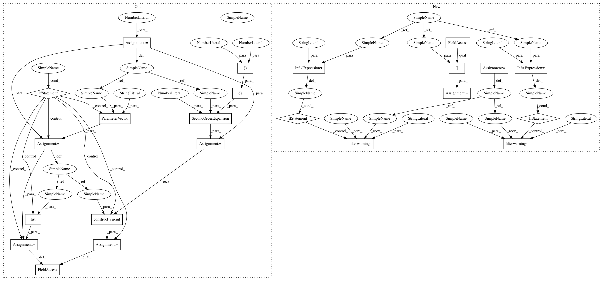

97c9871e334ae1e98c4eba025cf352e70f6a6701,test/aqua/test_qsvm.py,TestQSVM,test_qsvm_binary_directly_statevector,#TestQSVM#Any#,102
Before Change
[4.08407045, 2.26194671], [4.46106157, 2.38761042]])
backend = BasicAer.get_backend("statevector_simulator")
num_qubits = 2
feature_map = SecondOrderExpansion(feature_dimension=num_qubits,
depth=2,
entangler_map=[[0, 1]])
if use_circuits:
x = ParameterVector("x", num_qubits)
feature_map = feature_map.construct_circuit(x)
feature_map.ordered_parameters = list(x)
svm = QSVM(feature_map, self.training_data, self.testing_data, None)
quantum_instance = QuantumInstance(backend, seed_transpiler=self.random_seed,
seed_simulator=self.random_seed)
After Change
[4.08407045, 2.26194671], [4.46106157, 2.38761042]])
backend = BasicAer.get_backend("statevector_simulator")
data_preparation = self.data_preparation[data_preparation_type]
if data_preparation_type == "wrapped":
warnings.filterwarnings("ignore", category=DeprecationWarning)
svm = QSVM(data_preparation, self.training_data, self.testing_data, None)
if data_preparation_type == "wrapped":
warnings.filterwarnings("always", category=DeprecationWarning)
quantum_instance = QuantumInstance(backend, seed_transpiler=self.random_seed,
seed_simulator=self.random_seed)
file_path = self.get_resource_path("qsvm_test.npz")
In pattern: SUPERPATTERN
Frequency: 3
Non-data size: 23
Instances
Project Name: Qiskit/qiskit-aqua
Commit Name: 97c9871e334ae1e98c4eba025cf352e70f6a6701
Time: 2020-04-30
Author: jules.gacon@googlemail.com
File Name: test/aqua/test_qsvm.py
Class Name: TestQSVM
Method Name: test_qsvm_binary_directly_statevector
Project Name: Qiskit/qiskit-aqua
Commit Name: 97c9871e334ae1e98c4eba025cf352e70f6a6701
Time: 2020-04-30
Author: jules.gacon@googlemail.com
File Name: test/aqua/test_qsvm.py
Class Name: TestQSVM
Method Name: test_qsvm_binary
Project Name: Qiskit/qiskit-aqua
Commit Name: 97c9871e334ae1e98c4eba025cf352e70f6a6701
Time: 2020-04-30
Author: jules.gacon@googlemail.com
File Name: test/aqua/test_qsvm.py
Class Name: TestQSVM
Method Name: test_qsvm_binary_directly_statevector
Project Name: Qiskit/qiskit-aqua
Commit Name: 97c9871e334ae1e98c4eba025cf352e70f6a6701
Time: 2020-04-30
Author: jules.gacon@googlemail.com
File Name: test/aqua/test_qsvm.py
Class Name: TestQSVM
Method Name: test_qsvm_setup_data